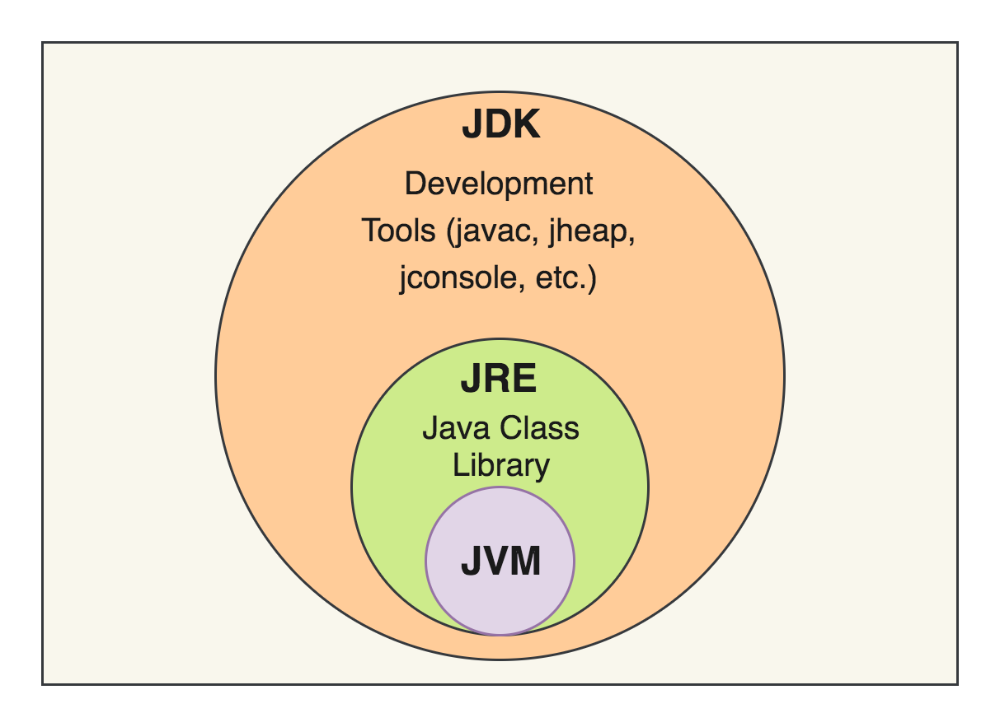
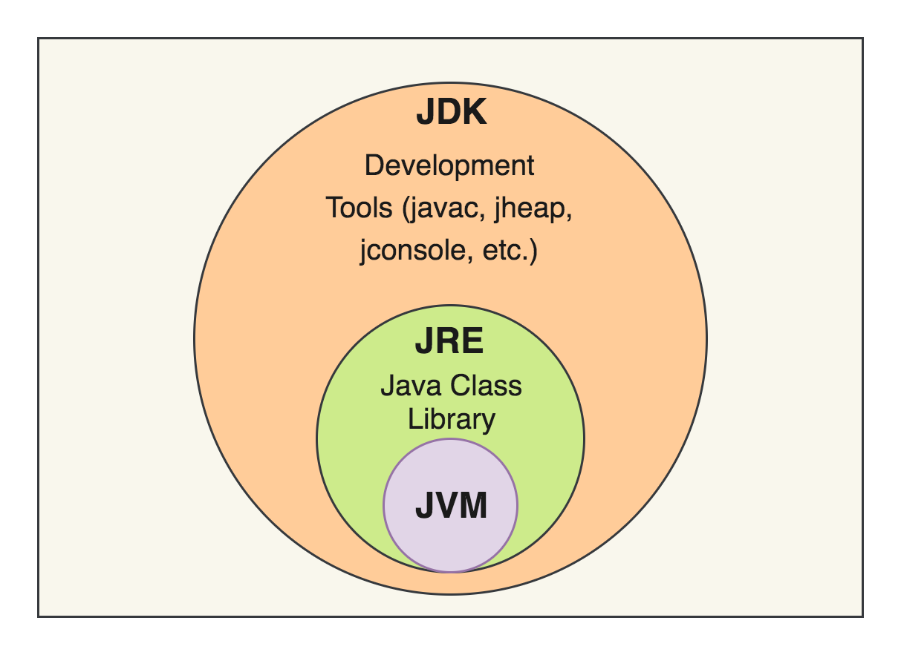

Java da platformlar arası gerekli kütüphaneler ve toolları içeren bir geliştirme çevresidir.
Java programlarının düzgün çalışması için gereken bir yazılımdır.
JRE Neden önemlidir ?
JRE Olmadan önce her bir işletim sistemi için ayrı bir kod yazmak gerekirdi.JRE buna çözüm olarak sunuldu.
JRE Nasıl çalışır ?
Java Geliştirme Kiti (JDK) ve JRE, Java program dosyalarını herhangi bir makinede çalıştıran sürdürülebilir bir çalışma zamanı ortamı oluşturmak için etkileşime girer. JRE, çalışmak için üç temel bileşen kullanır.
Java sınıf kitaplıkları, gerektiğinde arayabileceğiniz önceden yazılmış kod koleksiyonları içerir. Kullanıcılardan girdi alma, kullanıcılara çıktı gösterme ve daha fazlası gibi yaygın ve önemsiz olmayan görevler için yerleşik yöntemler sağlayarak Java geliştiricilerinin işini basitleştirirler. Tüm Java programları çeşitli sınıf kitaplıklarına başvurur. Java ClassLoader, gerekli tüm sınıf dosyalarını talep üzerine Java Sanal Makinesi'ne (JVM) dinamik olarak yükler.
JRE'deki bayt kodu doğrulayıcısı, Java kodunu JVM'ye yüklemeden önce biçimini ve doğruluğunu kontrol eder.
Bayt kodu başarıyla yüklendikten sonra Java yorumlayıcısı temel makinede Java programını çalıştıran JVM bulut sunucusunu oluşturur.
JVM, bilgisayarınızda bulunan bir sanal makinedir ve kullandığı makine dili ise bayt kodudur. Bu her farklı tip makine için farklı bir makine kodu yaratmak yerine JVM için sadece bayt kodu üretmesi gerektiğinden derleyicinin işini kolaylaştırır. JVM, derleyici tarafından üretilen bayt kodunu çalıştırır ve bir çıktı üretir. Yani Java’nın platform bağımsız çalışmasını sağlayan kişidir diyebiliriz.
 
